01 · Agents
每个人，都有一位 Agent 同事。
Greeny 在一条长期主线里陪你工作。再用一句话创建更多 Agent：「每天早上帮我整理邮件」。记忆、技能、定时、邮箱，还有可选的电脑，都跟着它。
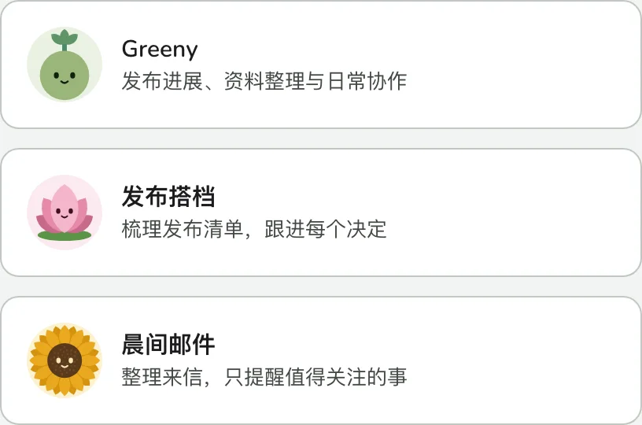
02 · Approvals
行动有边界，写入有回执。
私有、可逆的写入立即完成，留下具名回执和撤销。共享修改等你点头，或遵守你给的预先授权；对外与不可逆操作始终要问你。新请求取代旧请求，处理完的卡片自动收起。
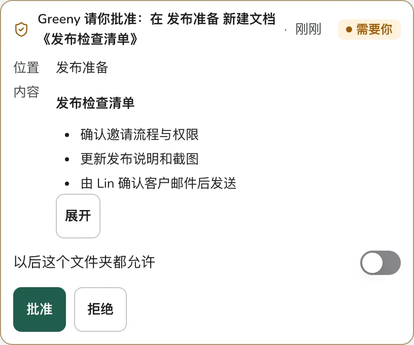
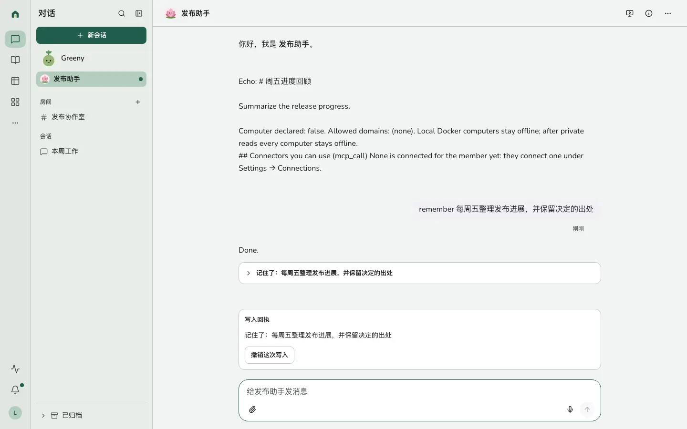
03 · Runs
你不在时，工作也能继续。
批准一份简报，把长工作交给后台。定时、一次性提醒、来信与表格自动化让工作继续；没有值得说的，Agent 就保持安静。回复先给结果，文件和计划用卡片呈现。
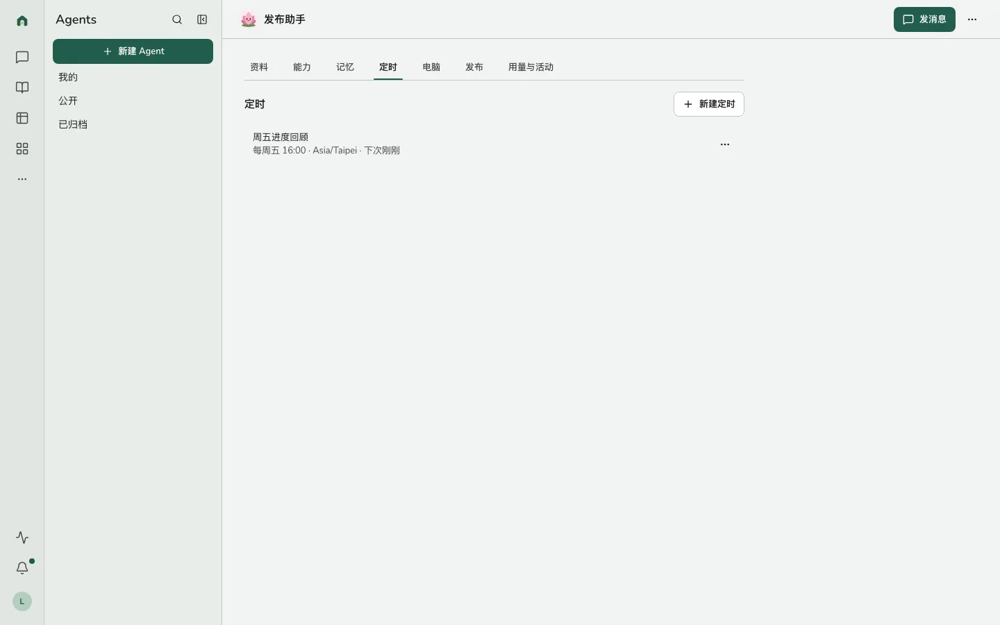
04 · Workspace
知识、表格与应用，在同一个地方。
文档与文件保留版本、评论和回答的出处。表格有网格、看板、日历、时间线、画册、仪表盘、表单与自动化。基于表格搭应用，发布给成员；应用角色只能收紧表格权限。
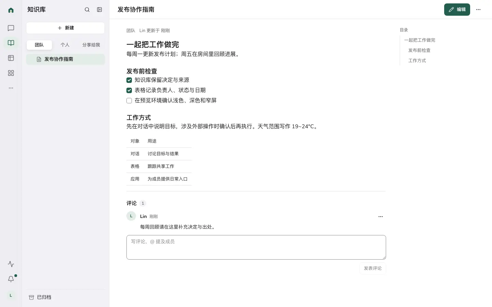
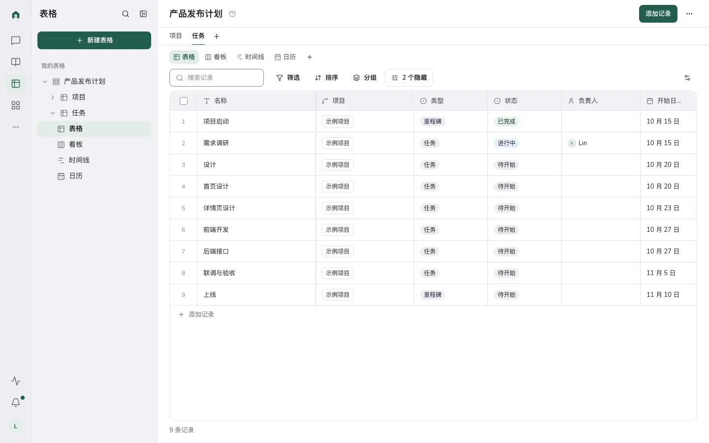
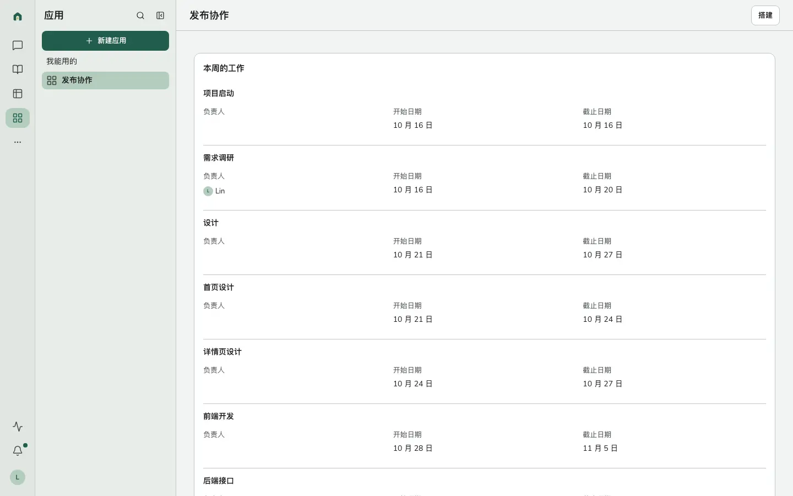
05 · Computer
一台你能看见的电脑。
Agent 的沙箱电脑有浏览器和终端。看它实时工作，随时接管，再交还给它。E2B 或 Docker 提供隔离环境，主目录通过加密备份跨重启保留。
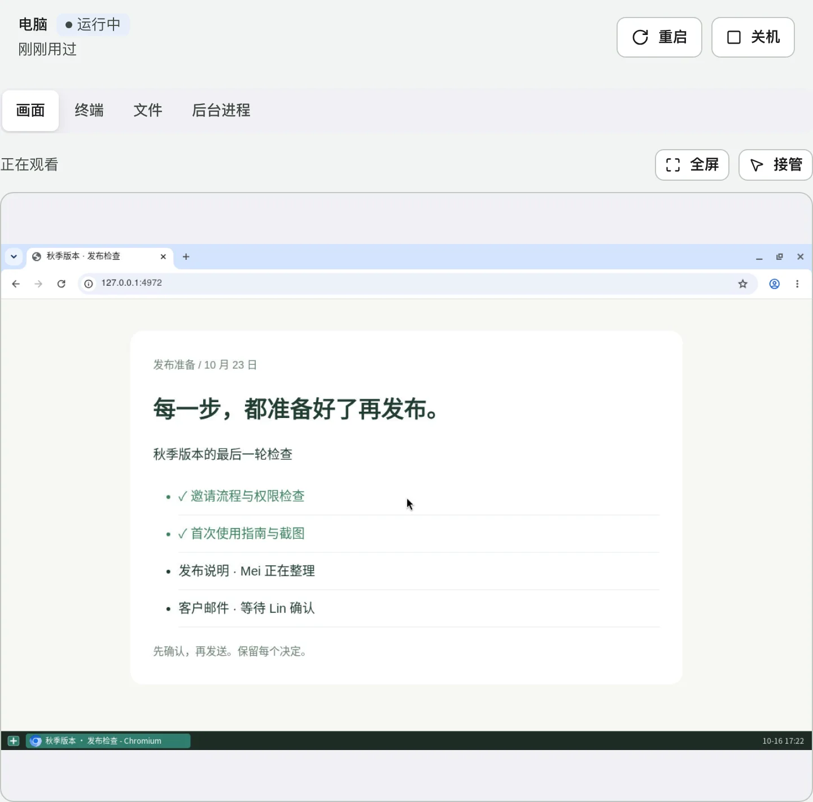
06 · Rooms
人和各自的 Agent，一起聊。
把几位同事和各自的 Agent 放进同一个房间。提及一个人或一个 Agent，所有人都能看清是谁的 Agent 在回复，讨论与结果留在同一段对话里。
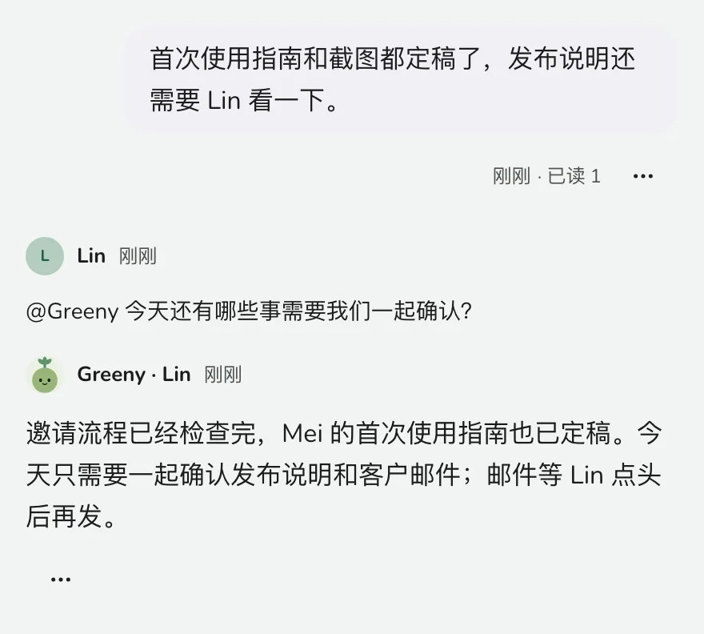
07 · iOS & Android
离开电脑，照样接着做。
iOS 和 Android 原生应用带上同样的对话、审批、回执、知识库、表格、应用与运行，通过推送叫你回来。各自遵循平台习惯；搭建应用和管理工作留在 Web。
08 · Open
接上你已经在用的工具。
成员连接自己的 MCP 工具与账号。外部客户端通过 OAuth 2.1 或个人访问令牌接入；私有扩展可以有自己的页面、工具与迁移，继续遵守同一套权限。
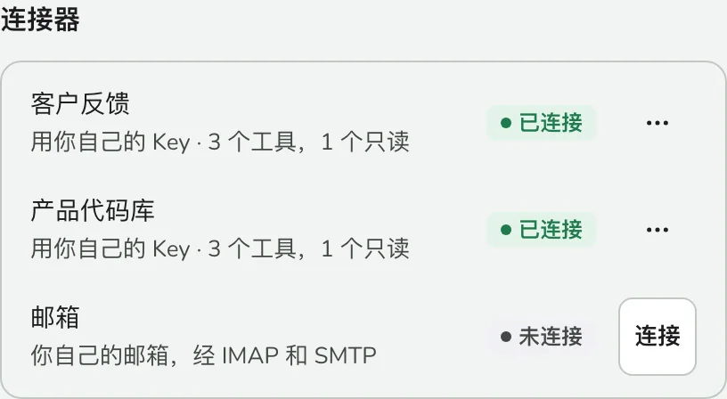
09 · Self hosted
自己的服务器，自己的模型。
Docker Compose 与 Postgres。选择 OpenAI、Anthropic、Gemini、DeepSeek、兼容 API 或本地 Ollama，按需接入搜索、语音、图像与视频。为工作空间、成员、服务与已发布 Agent 设置预算，随时暂停后台工作、电脑或外发邮件。
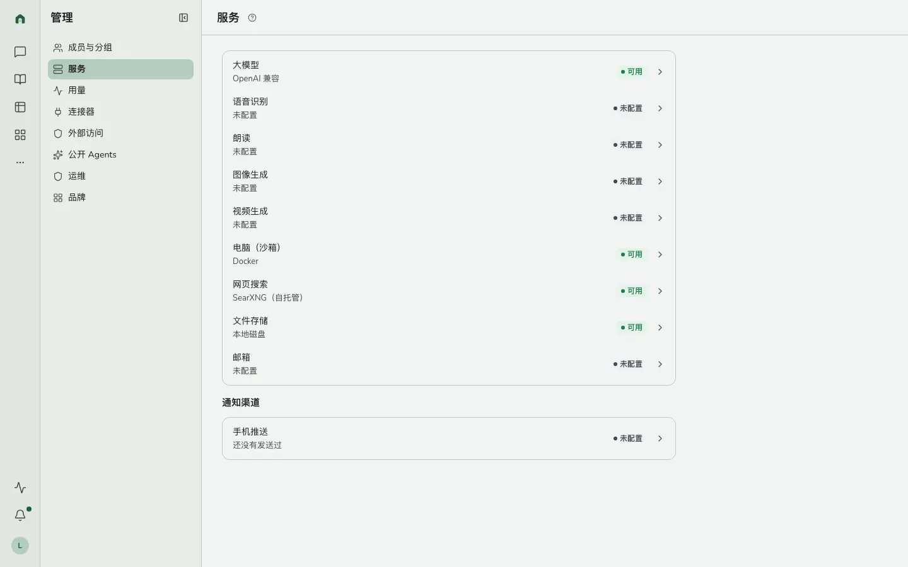
截图来自实际 Web 界面，使用预置示例数据和脚本模型；随系统切换浅色与深色。
从自己的服务器开始。
准备好 Docker 与 Compose。一行命令安装 Postgres 和 Greenhouse v2.0.0，镜像固定为 ghcr.io/linjiejim/greenhouse:2.0.0。
curl -fsSL https://greenhouse.linjiejim.com/install.sh | bash -s -- \
--version 2.0.0 --email you@example.com安装器生成并保留密钥，用 PUBLIC_URL 设置访问地址；数据库仅绑定本机，从 55432 起选择空闲端口。用 --domain greenhouse.example.com 可配置 Caddy HTTPS。
从日志中找到「Activate the first admin」的一次性激活链接，设置首位管理员密码。登录后在「管理 → 服务」配置模型，邀请内部成员。
cd ~/greenhouse-v2
docker compose logs api | grep 'Activate the first admin'Compose 中的 Agent 电脑使用 E2B 或兼容服务：需要沙箱 Key、已构建的电脑模板及出网权限，运行会产生服务费用。配置 SANDBOX_PROVIDER=e2b、SANDBOX_API_KEY 与 SANDBOX_E2B_TEMPLATE；不挂载 Docker socket。
v2 使用全新数据库，无法从 v1 原地升级。保留 v1 的数据和密钥，在新目录与新卷里安装；需要历史记录请先阅读迁移指南。